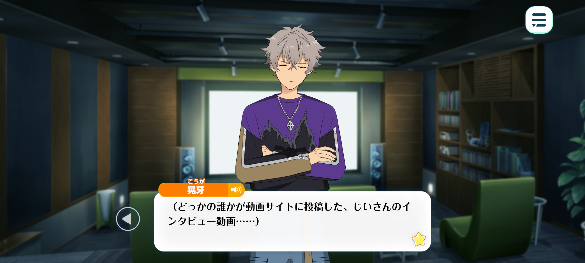
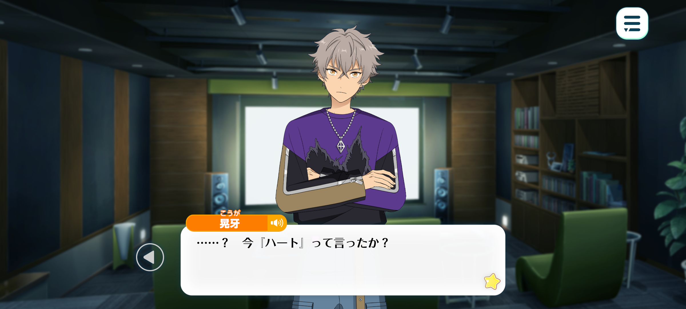
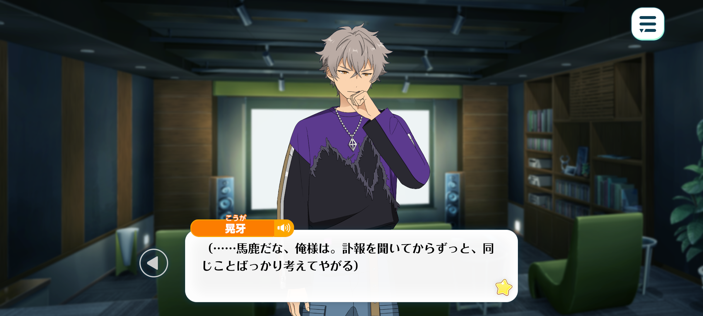
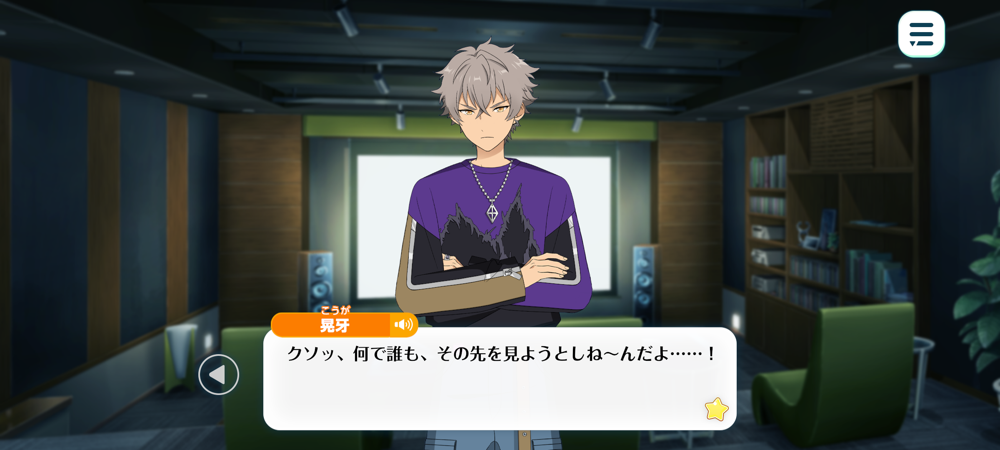

In Memoriam◆Handwriting, Chasing, Rambling
Good-Bye / Chapter 2

Time: Several days later
Location: The Seisoukan cinema room

Koga: (An interview of gramps that someone or other uploaded…)
(No matter how much I rewind it, I still got no idea what he’s sayin’.)
(It’s not an official video so there’s no subtitles. And his accent’s so damn strong.)
(...It was like that at his lives, too.)
(He'd come on stage all quiet, but halfway through, he'd get into it ‘n start talkin’ up a storm.)
(His accent was so strong I could barely catch a word he was sayin’… Bet half the crowd didn't have a clue either.)
(Apparently even city folk from the UK had trouble understandin’ him.)
(But he didn't give a damn.)
(There’d be times when the whole place’d go kinda quiet, and he’d jus’ stand there on stage, laughin’ at some joke he’d made.)
(I thought my English was pretty damn good back then, so I was kinda miffed.)
(...But I guess it didn’t really matter that I couldn’t understand much. I knew what to do when he wanted to get the crowd fired up.)
(When he shouted, we’d shout right back. When he threw up his hands, we’d do the same)
(It was amazin’, gettin’ that excited together… The energy was incredible.)
(That was your typical MARBLING show.)
(We didn't need to speak the same language. Kinda funny, now I think about it.)
(...Ah shit. I’m gettin’ all nostalgic.)

…? Did he just say “heart”?
I think he’s talkin’ about the band's logo.
(A heart wreathed in flames, with these huge wings spread out…)
(If I remember right, he used a tattoo he got when he was younger as the band’s logo.)
…He never sold a single bit of merch at his shows.
Not even CDs. He'd come to Japan, play his songs, and that was it.
So the only piece of him I have left is this little guitar pick.
(At the end of every show, he’d turn around, face the crowd, and casually chuck his pick out to us.)
(People would always scramble to catch it. After so many shows, I finally managed to catch this one, after crawlin’ across the floor and stretchin’ my arm out as far as I could.)
(For a guy who's done countless performances, he probably thought nothin’ of it.)
(But to me… it's different. It’s the only thing I’ve got left of him, so I treasure it.)
(...That other live, I wish I'd gone. I couldn't make it ‘cos of work.)
(At the time, I didn’t think I could make it. But… If I’d jus’ tried harder, maybe I coulda.)
(If I'd rearranged my schedule ‘n rushed over, I coulda at least made it for the last few songs.)
(If I hadn't just given up and accepted that I couldn’t go, I coulda seen him perform just one more time—)
(...But it’s not just that time.)
(I shoulda gone when Sakuma-senpai invited me. Instead I had to go and be a stubborn fuckin’ idiot.)
(Even if we don’t speak the same language, we coulda communicated somehow. With gestures or body language or whatever.)

(...I'm a fuckin’ idiot. Ever since I saw the news about his death, I’ve jus’ been going over the same things again and again.)
(I know there’s nothin’ I can do about it. No matter how much I regret it, I can’t change what happened.)
(But I can’t stop thinkin’ about it. What if I’d gone? What if I’d tried harder? I keep goin’ over it in my head. Over and over.)
(Even though I know it won’t change a damn thing.)
…The internet is still full of videos from when he was younger.
It's amazing, really. All these armchair critics love runnin’ their mouths, sayin’ it was just raw momentum or whatever that got him where he was.
Do they really think rock music is about playin’ it safe and stickin’ to the book?
If that's the kinda music they wanna listen to, then be my guest. Go listen to whatever slop some bot’s shit out.
As much as it pisses me off to admit it, but the old man really did live up to the legends.
This video’s old as shit but the crowd. They’re goin’ nuts. Some people are even cryin’.
Every time he does somethin’ the whole place erupts in screams. It's like an earthquake’s tearing through the entire venue.
No wonder they're still talkin’ about him after all these years.
(But… this isn't the MARBLING I know.)
(The old man I know ain't standin’ on some huge stage.)
(He'd be in some tiny club, playin’ in a run down building somewhere. Didn’t matter though. He had a way of makin’ even the smallest stage feel massive.)
(It didn't matter if there were ten people in the crowd or ten thousand. He’d get up there and play, with that rough, gravelling voice of his never once lettin’ up.)
Years could pass. New trends could come ‘n go. He never changed. He jus’ kept on standin’ on that stage.)
(I’m not tryna say anythin’ bad about how he was back then.)
(That’s the era that made him into the guy I knew. All that work is what made his voice sound the way it did when I knew him best. That’s what made him, him.)
(And yet…Out of all these posts, all these videos, all these people talkin’ about him. The version of him I knew is nowhere to be found.)

Fuck man, why won't anyone see what what I see…!
All they talk about is his prime! About how he was at his best back then!
That's just what you think his best era was! You're forcin’ your own standards on him!
They're actin’ like the only time he was a bad ass rockstar was way back when…!
But the MARBLING I knew, the MARBLING I loved was ALWAYS at his peak!
Right until the very end. Right up until he died!
That was MARBLING, you fuckin morons…!